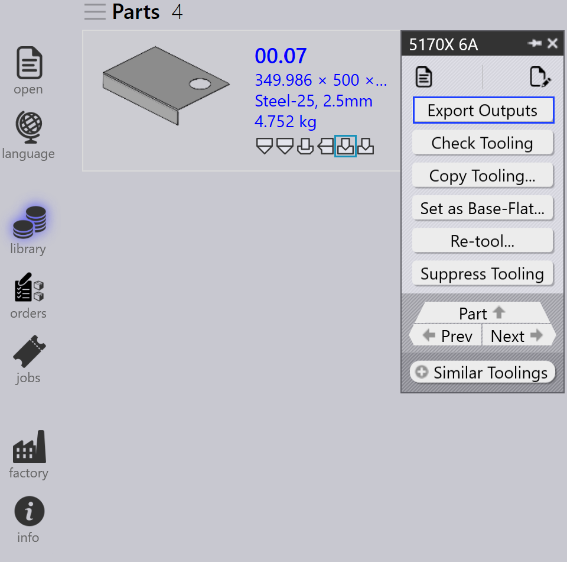

แผงเครื่องมือ
ส่วนนี้อธิบายการดำเนินการที่เกี่ยวข้องกับเครื่องมือ เช่น ส่งออกเอาต์พุต, Check Tooling, ปิดการใช้เครื่องมือ, ตั้งค่าเป็น Base-Flat…, คัดลอกเครื่องมือ… และตัวเลือกอื่นๆ ที่ใช้ในการจัดการอินสแตนซ์เครื่องมือ

|
|


ส่งออกเอาต์พุต
ตัวเลือกนี้ส่งออกผลลัพธ์ชิ้นส่วนไปยังปลายทางที่กำหนดค่าไว้ใน การตั้งค่าโรงงาน (ดู Bend Settings และ Cut Settings)

มีเพียงเครื่องมือที่เกี่ยวข้องกับการดำเนินการเครื่องมือที่เลือก เท่านั้นที่ถูกส่งออก ไม่ใช่ทั้งชิ้นส่วน
| ไฟล์ที่ส่งออกขึ้นอยู่กับประเภทการดำเนินการ สำหรับการดำเนินการ Bend และ Fold จะสร้างไฟล์ NC และรายงาน สำหรับการดำเนินการ Cut และ Punch จะส่งออกเฉพาะไฟล์ชิ้นส่วนเท่านั้น |
Check Tooling
-
หากมีการเปลี่ยนแปลงใน CAM Settings หรือเครื่องมือดัดสูญหาย คุณไม่จำเป็นต้อง Re-tool ชิ้นส่วน
-
แทนที่จะเป็นเช่นนั้น ให้ใช้ Check Tooling เพื่อตรวจสอบความถูกต้องของเครื่องมือที่มีอยู่โดยไม่ทำ การเปลี่ยนแปลงใดๆ
-
หากการตรวจสอบล้มเหลว สถานะเครื่องมือของอินสแตนซ์นั้นจะถูกอัปเดต แลๅ ไฟล์ผลลัพธ์ที่เกี่ยวข้องจะถูกลบออก
-
Check Tooling ยังตรวจจับชิ้นส่วนที่มีข้อผิดพลาดที่ถูกแทนที่ด้วยตนเองก่อนหน้านี้ โดยใช้ ละเว้นข้อผิดพลาด และอัปเดตสถานะ เป็นข้อผิดพลาดหากจำเป็น

คัดลอกเครื่องมือ…
การคัดลอกเครื่องมือช่วยให้คุณสามารถนำเครื่องมือดัดจากโซลูชันหนึ่งไปใช้กับ โซลูชันอื่นๆ ได้อย่างรวดเร็ว ประหยัดเวลาและความพยายาม
การดำเนินการนี้จะคัดลอกการตั้งค่าเครื่องเจาะ ลำดับ และ back gauge จากเครื่องมืออ้างอิง ที่เลือก (โซลูชัน) และพยายามนำการตั้งค่าเดียวกันไปใช้กับโซลูชันอื่นๆ ทั้งหมด
-
หากการตั้งค่าที่คัดลอกนั้นเป็นไปได้สำหรับเครื่องจักรเป้าหมาย จะถูกบันทึกและนำไปใช้
-
หากการตั้งค่าไม่เป็นไปได้ เครื่องมือเดิมสำหรับเครื่องจักรนั้นจะยังคง ไม่เปลี่ยนแปลง
ตัวอย่างเช่น คุณอาจมีเครื่องมือที่แตกต่างกันสำหรับเครื่องจักรต่างๆ:
-
ที่นี่ Machine 5230SX 6A ใช้เครื่องเจาะ Gooseneck, Machine 5085X 6A B23 ใช้ เครื่องเจาะ Pointed

เมื่อคุณใช้ คัดลอกเครื่องมือ… บน Machine 5230SX 6A มัน พยายามคัดลอกการตั้งค่า Gooseneck ไปยังเครื่องจักรอื่นๆ ทั้งหมด

การตั้งค่าเครื่องเจาะ ลำดับ และ back gauge เดียวกันจะถูกนำไปใช้ทุกที่ที่ เป็นไปได้ หากการตั้งค่าที่คัดลอกไม่สามารถใช้ได้ เครื่องมือเดิมจะยังคง ไม่เปลี่ยนแปลง

หลังจากนำการคัดลอกเครื่องมือไปใช้ การตั้งค่า Gooseneck ได้ถูกนำไปใช้สำเร็จ กับเครื่องจักรอื่นๆ ทั้งหมดที่เป็นไปได้
ตั้งค่าเป็น Base-Flat…
คุณลักษณะ ตั้งค่าเป็น Base-Flat… กำหนดว่าเครื่องมือดัดหรือพับ ใดจะถูกใช้เป็นขนาดแบนอ้างอิงสำหรับการสร้างโซลูชันการตัด เมื่อเครื่องมือถูกทำเครื่องหมายเป็น Base-Flat, TruSmartCAM จะอัปเดตขนาดแบนของชิ้นส่วน ตามเครื่องจักรนั้นและสร้างโซลูชันการตัดใหม่ตามนั้น เครื่องมือ Base-Flat จะแสดงด้วยเส้นขอบสีน้ำเงินใน UI
เครื่องจักรดัดต่างๆ อาจผลิตขนาดแบนที่แตกต่างกันเล็กน้อยสำหรับ ชิ้นส่วนเดียวกัน เมื่อคุณตั้งค่าเครื่องมือเป็น Base-Flat, TruSmartCAM จะใช้ขนาดแบน ของเครื่องจักรนั้นเป็นการอ้างอิงหลักและคำนวณโซลูชันการตัดใหม่โดยอัตโนมัติ
ที่นี่ เราสามารถเห็นขนาดแบนที่แตกต่างกันสำหรับชิ้นส่วนเดียวกันในเครื่องจักร ต่างๆ:

ในตัวอย่างนี้ เครื่องมือ 5130X 6A B23 ถูกตั้งค่าเป็น Base-Flat และ ขนาดแบนที่อัปเดตจะถูกนำไปใช้ในคุณสมบัติชิ้นส่วน:

การเลือก base flat อัตโนมัติ
เมื่อการตั้งค่าโรงงาน ใช้การปรับแก้ลวดลายแผ่ระหว่างการดัด เปิดใช้งาน:

-
TruSmartCAM จะตั้งค่าเครื่องมือดัด (ที่มีตารางความยาวดัดสูงสุด) เป็น Base-Flat โดยอัตโนมัติระหว่างการนำเข้าชิ้นส่วน
-
หากเครื่องมือดัดที่เลือกพบข้อผิดพลาดหรือไม่เป็นไปได้ TruSmartCAM จะสลับอย่างชาญฉลาดและตั้งค่าเครื่องมือดัดที่ถูกต้องอื่นเป็น Base-Flat เพื่อให้แน่ใจว่าการอ้างอิงขนาดแบนและโซลูชันการตัดยังคง สอดคล้องและถูกต้องเสมอโดยไม่ต้องมีการแทรกแซงด้วยตนเอง
การจัดการ base flat ที่ปรับปรุงแล้ว
TruSmartCAM มีตัวเลือก Base-Flat ในกล่องโต้ตอบ บันทึกไปยัง Praxis เมื่อบันทึกการแก้ไขเครื่องมือดัดหรือพับ ตัวเลือกเหล่านี้จะปรากฏเฉพาะสำหรับ เครื่องมือในสถานะ OK และช่วยให้มั่นใจว่าขนาดแบนและโซลูชันการตัดยังคง ถูกต้อง
ตั้งค่าเป็น Base-Flat และคำนวณโซลูชันการตัด
ตัวเลือกนี้ใช้เพื่อทำเครื่องหมายเครื่องมือเป็น Base-Flat เป็นครั้งแรกและ สร้างโซลูชันการตัดที่เกี่ยวข้องโดยอัตโนมัติ
ปรากฏเมื่อ:
-
เครื่องมือไม่ได้ถูกทำเครื่องหมายเป็น Base-Flat ในปัจจุบัน
-
ผู้ใช้ได้ check out เครื่องมือเพื่อแก้ไขและกำลังบันทึกการเปลี่ยนแปลง

หากต้องการใช้ตัวเลือกนี้ ให้ check out เครื่องมือดัดหรือพับและทำการ ปรับเปลี่ยนที่จำเป็น เช่น การเปลี่ยนแปลงพารามิเตอร์การดัดหรือขนาดแบน กด Ctrl+S เพื่อบันทึกการเปลี่ยนแปลง ในกล่องโต้ตอบ บันทึกไปยัง Praxis เลือก ตั้งค่าเป็น Base-Flat และคำนวณโซลูชันการตัด และ คลิก ตกลง TruSmartCAM จะตั้งค่าเครื่องมือเป็น Base-Flat และสร้าง โซลูชันการตัดโดยใช้ขนาดแบนที่อัปเดต
อัปเดต Base-Flat และคำนวณโซลูชันการตัดใหม่
ตัวเลือกนี้ใช้เมื่อเครื่องมือถูกทำเครื่องหมายเป็น Base-Flat อยู่แล้วและได้รับ การแก้ไข ซึ่งต้องการให้ขนาดแบนและโซลูชันการตัดถูกสร้างใหม่
ปรากฏเมื่อ:
-
เครื่องมือถูกทำเครื่องหมายเป็น Base-Flat อยู่แล้ว
-
ผู้ใช้ได้ check out แก้ไข และกำลังบันทึกการเปลี่ยนแปลง

เมื่อแก้ไขเครื่องมือ Base-Flat ที่มีอยู่ ให้อัปเดตพารามิเตอร์การดัดหรือ เรขาคณิตขนาดแบนตามที่ต้องการ ในกล่องโต้ตอบ บันทึกไปยัง Praxis เลือก อัปเดต Base-Flat และคำนวณโซลูชันการตัดใหม่ TruSmartCAM จะอัปเดตเครื่องมือ Base-Flat และสร้างโซลูชันการตัดที่เกี่ยวข้อง ทั้งหมดใหม่เพื่อสะท้อนการเปลี่ยนแปลงล่าสุด
|
สามารถตั้งค่าเครื่องมือดัดเพียงหนึ่งรายการเป็น Base-Flat ได้ในแต่ละครั้ง เมื่อ Base-Flat มีการเปลี่ยนแปลง โซลูชันการตัดที่มีอยู่จะถูกประมวลผลใหม่ โดยอัตโนมัติ คุณลักษณะนี้พร้อมใช้งานสำหรับทั้งเครื่องมือดัดและพับภายใน TruSmartCAM |
กำหนดเครื่องมือใหม่…
ตัวเลือกนี้ประมวลผลเครื่องมือที่เลือกสำหรับชิ้นส่วนใหม่
คลิกขวาที่เครื่องมือที่ต้องการในแผง Tooling และคลิก กำหนดเครื่องมือใหม่…

กล่องโต้ตอบยืนยันจะแสดงขึ้นก่อนดำเนินการต่อ

คลิก ใช่ เพื่อดำเนินการ re-tooling ต่อ หรือ ไม่ เพื่อ ยกเลิกการดำเนินการ
มีเพียงเครื่องมือที่เลือกเท่านั้นที่จะถูก re-tool เครื่องมืออื่นๆ ที่เกี่ยวข้องกับ ชิ้นส่วนจะไม่ได้รับผลกระทบ ผลลัพธ์ที่มีอยู่ซึ่งเกี่ยวข้องกับเครื่องมือที่เลือก จะถูกลบออกและสร้างใหม่ระหว่างกระบวนการ re-tooling
ใช้ตัวเลือกนี้เมื่อข้อมูลเครื่องมือล้าสมัย ไม่ถูกต้อง หรือเมื่อ มีการเปลี่ยนแปลงการกำหนดค่าเครื่องจักรหรือเครื่องมือ
ละเว้นข้อผิดพลาด
-
หากอินสแตนซ์ที่ติดตั้งเครื่องมือแสดงคำเตือน และคุณยังคงต้องการดำเนินการต่อ คุณสามารถแทนที่คำเตือนได้โดยคลิก ละเว้นข้อผิดพลาด

-
การดำเนินการนี้จะอนุญาตให้ระบบส่งออกไฟล์ผลลัพธ์สำหรับอินสแตนซ์ นั้น แม้จะมีปัญหาเครื่องมือก็ตาม
| ใช้ Ignore Errors เฉพาะเมื่อคุณแน่ใจว่าคำเตือนสามารถ ถูกละเว้นได้อย่างปลอดภัย การแทนที่ข้อผิดพลาดจริงอาจนำไปสู่ความเสียหายของเครื่องจักรหรือความเสี่ยงด้านความปลอดภัย |
การระงับ/ยกเลิกการระงับเครื่องมือ
-
เมื่อเครื่องจักรไม่ทำงานหรือคุณไม่ต้องการให้ชิ้นส่วนเฉพาะถูก ประมวลผลโดย เครื่องจักรเฉพาะ ใช้ ปิดการใช้เครื่องมือ เพื่อยกเว้น ชิ้นส่วนนั้นจากการจัดวางบนเครื่องจักรนั้น

-
หลังจากการระงับ การวางเมาส์เหนืออินสแตนซ์ที่ติดตั้งเครื่องมือจะแสดง ข้อความเช่น: "Tooling suppressed by <User name> on <Date Time>"
-
การระงับเครื่องมือจะลบไฟล์ผลลัพธ์สำหรับเครื่องจักรและชิ้นส่วนนั้น
-
ใช้ เปิดการใช้เครื่องมือ เพื่อกลับคืนสถานะเครื่องมือ สำหรับชิ้นส่วนบนเครื่องจักรนั้น

-
เมื่อยกเลิกการระงับ ไฟล์ผลลัพธ์ที่เกี่ยวข้องจะถูกสร้างขึ้นอีกครั้ง